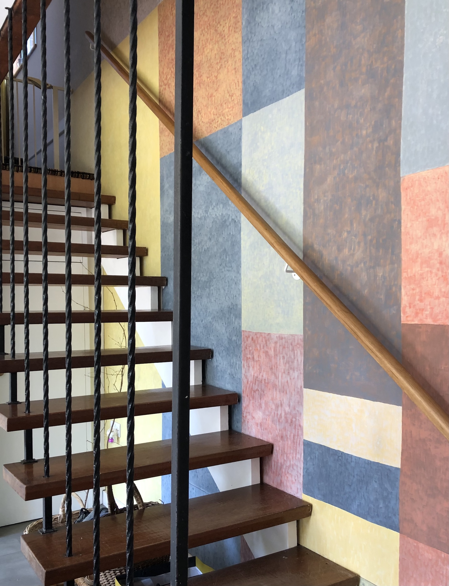

A painted backdrop to the 1960's hanging teak stairs, rising up out of the hall and into the house above. We loosely based this design on work by Sophie Tauber Arp - I hope she would approve.

...
The composition adapted to fit the wall using colours from our wall colour tester pots collected up over the last 5 years.